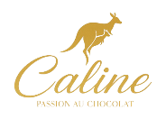

سنوات المصنع
بحلول 2016، كانت الشوكولاتة البلجيكية المصنوعة يدويًا في قلب قصة مصنع كالين.
قصتنا
من صناعة الشوكولاتة في الشارقة إلى البوتيكات في أنحاء الخليج، جمعت قصة كالين دائمًا بين الحرفة والإهداء وجمال التقديم.

العلامة
انتقل الكنغر واسم كالين من العلبة إلى البوتيك، وبقيا توقيعًا مألوفًا للعلامة أينما ظهرت.علامة بسيطة أصبحت مألوفة مع الوقت.
على الطريق
بحلول 2016، كانت الشوكولاتة البلجيكية المصنوعة يدويًا في قلب قصة مصنع كالين.
تابعت زيارة للمنطقة الحرة بالحمرية رحلة شوكولاتة كالين من التشكيل إلى التعبئة.
بحلول 2021، ظهرت قصة كالين بين التصنيع في الشارقة والبيع في عدد من أسواق الخليج.
حول الخليج
من الشارقة إلى جميرا والرياض وعُمان، عاشت كالين فصولًا مختلفة في المنطقة. لمعرفة المواقع والتوفر الحاليين، اسألنا مباشرة.
قلب قصة تصنيع كالين، بجذور في المنطقة الحرة بالحمرية.
فصل من قصة بوتيك ومقهى كالين في دبي.
فصل للبيع عبر البوتيك والإنترنت ظهر في الرياض منذ 2021.
فصل آخر من قصة كالين في أسواق المنطقة.
ما القادم
مع نمو كالين، تبقى الشوكولاتة وعلامة الكنغر والعناية بالتقديم في قلب الهوية.
هوية واحدة
هوية واضحة تربط كل مجموعة وسوق جديد بالقصة نفسها.